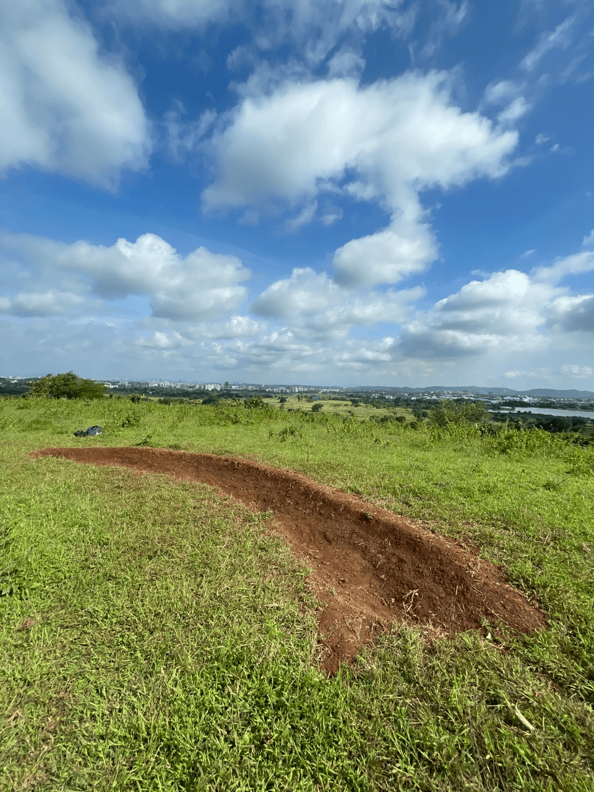
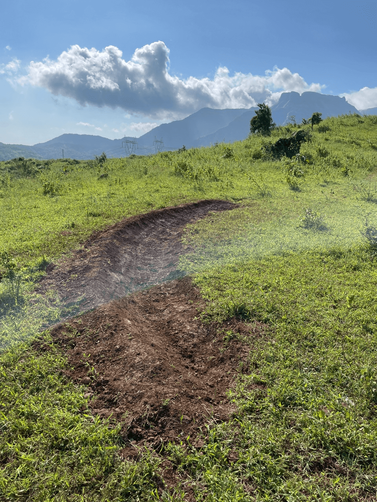
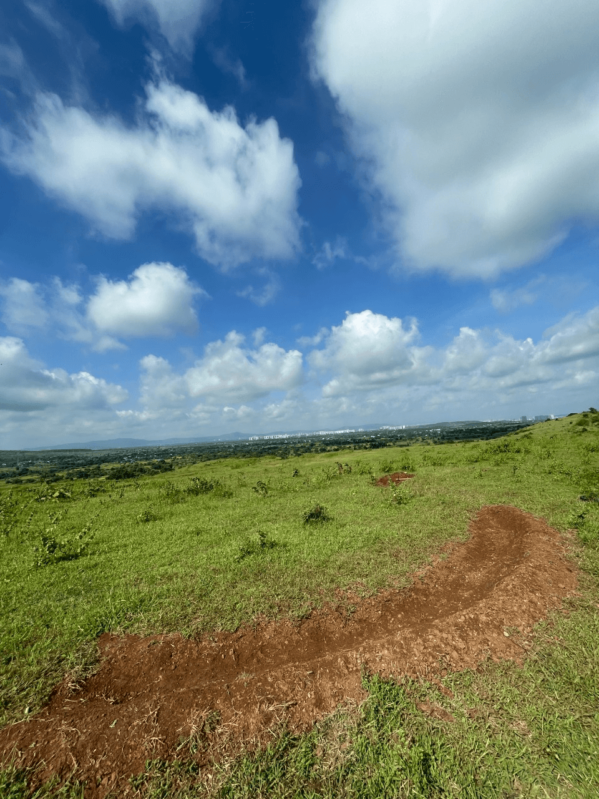
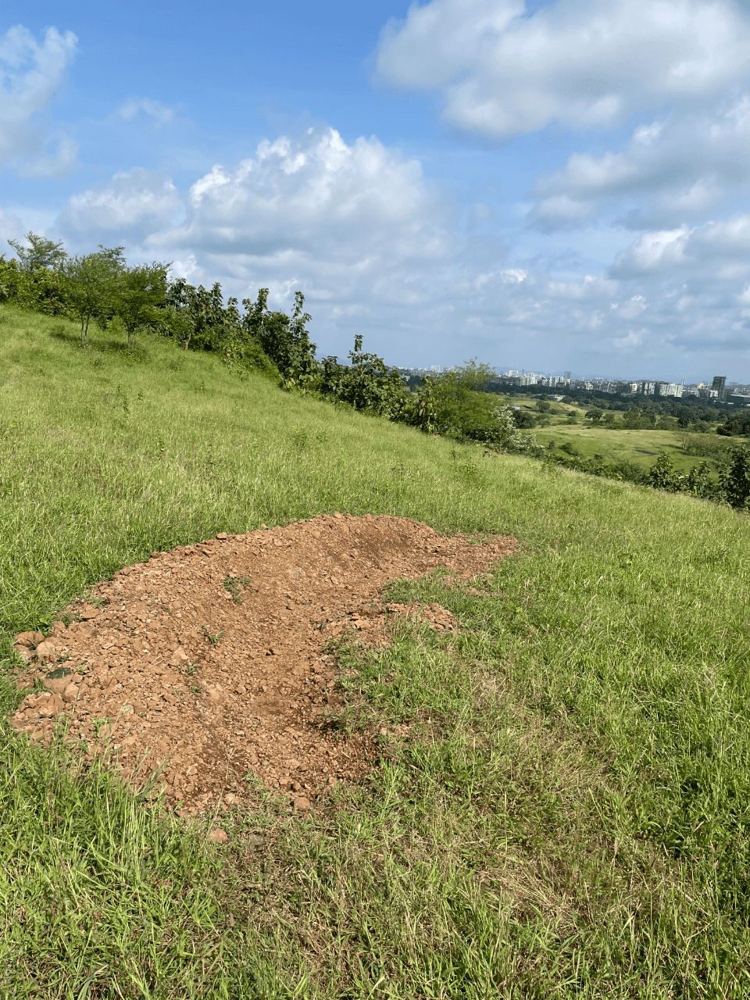
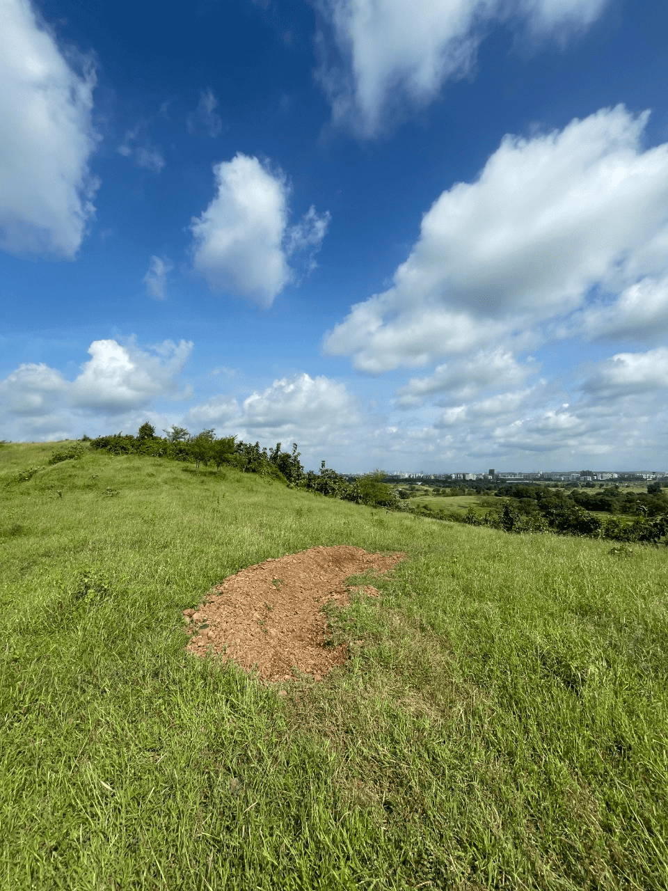
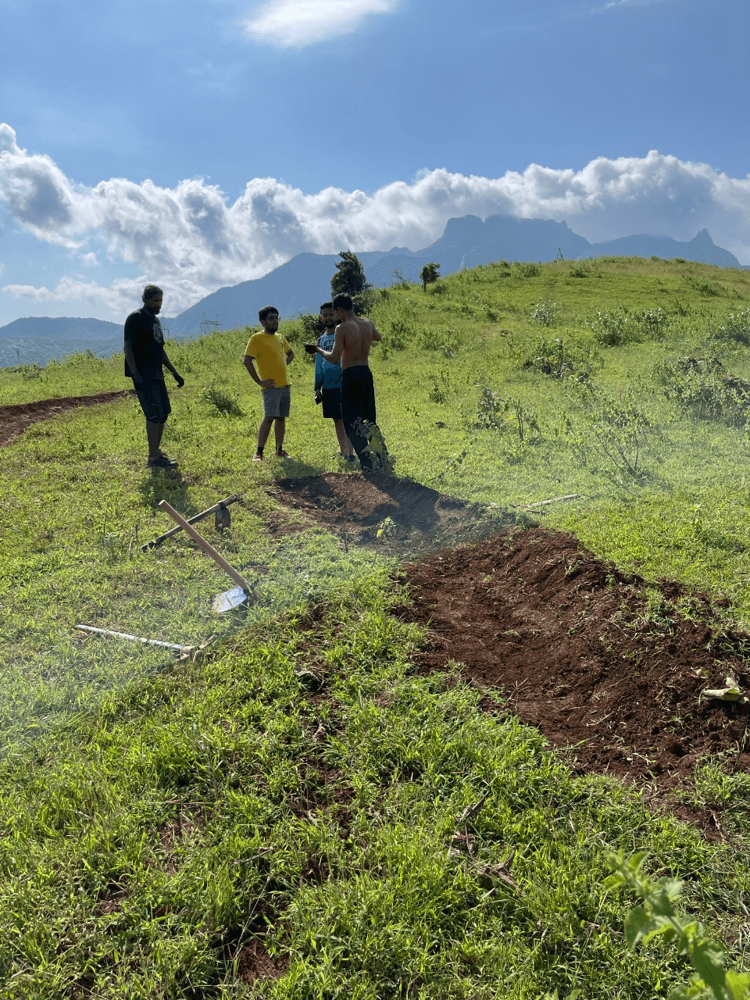
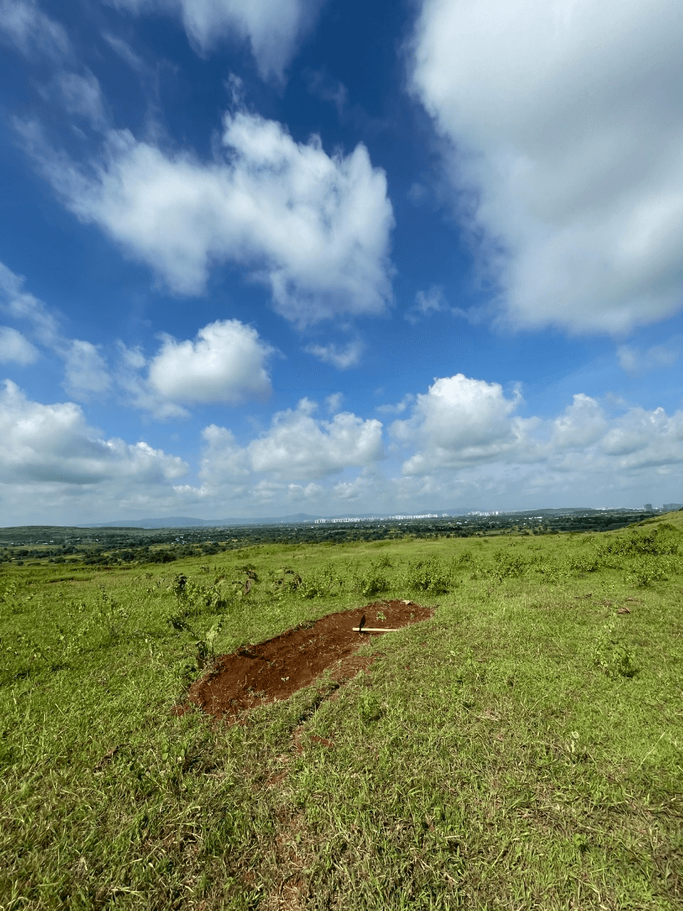
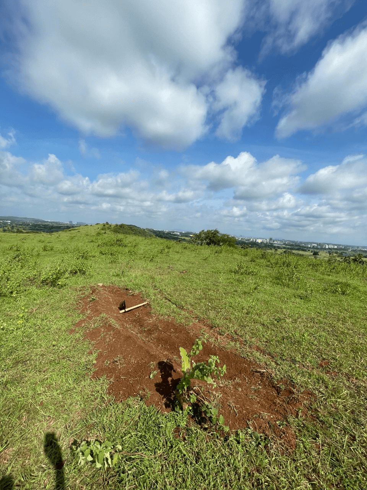
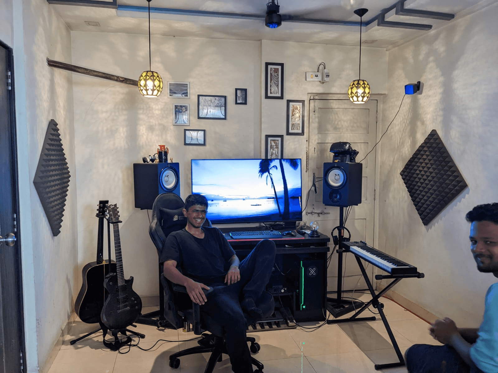
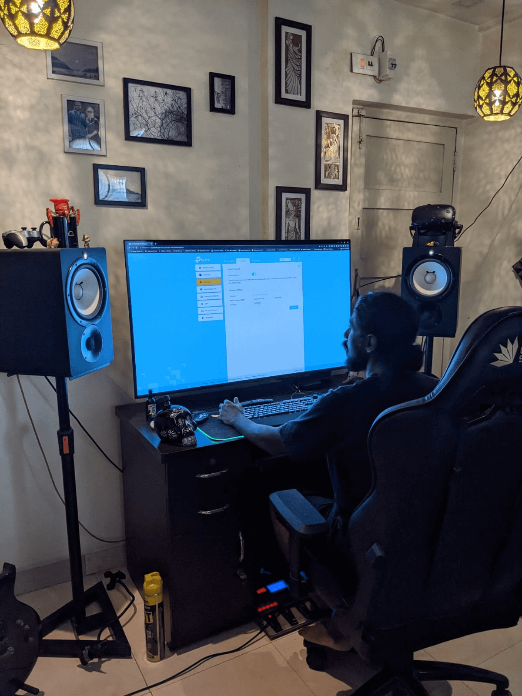

2022-10-11
My phone’s alarm rang at 4:30 AM and I switched it off, but lay in bed debating whether to go or not. Got woken up again at 4:40 AM by another alarm. cue morning routine
Read 60 pages of The Gentlemen In Moscow on my way while on the first-class train without a ticket. The last time I did this I had my tribe with me and we were going to the Rayate Race.
Hitesh picked me up at 7:30 we went to the trail in Ambernath.
These berms existed.





After some testing, {{< youtube fO3eVUITCr0 >}}
We built.

Turned the first berm into an S, may further extend this into another S


{{< youtube hLHdEnZ8Qk8 >}}Then a lot of baatein. Mainly about our dating scene.
Then trail planning, one more pair of S berms, then a sequence of 1 bike length tabletop to 1.5 BL Gap Jump to 2 BL Gap Jump to 2.5BL Gap Jump then a right-hander berm. That is it, there’s natural tech after that.
Enjoyed a conversation about the importance of reading and high quality social cirle with Hitesh in his car. Grateful for going to a proper rich kid school because:
Then stopped at Sri’s place after going on Kashish’s scooter to buy idli. The vendor gave us extra because “Sabka upwaas hai aur kuch bik nahi raha.” and asked Hitesh to call her daughter to confirm payment and to tell her to eat chocolate (was it chocolate?). I laughed hysterically at that request causing all of us to laugh. Unfortunately, the daughter did not pick up. Imagine a random grown-ass dude saying “Maa ne bola hai khana khaalo” then abruptly cutting the call.
At Sri’s we appreciated his man cave. When I say that I meant more like staring in awe.


A 49” monitor, Ryzen 7 3700x, 128G ram, 3070ti, and 4.4TB storage. Aur kya chahiye? AND a VR headset. Played some games, only enough to experience a 49” monitor and high-end graphics. Sri is a video editor so it makes sense.
Kashish and I took turns playing a shooting game in VR. I requested porn. As someone who practices NoFap proudly, I will gladly watch VR porn once just for the experience. At this point, I only watch porn to learn/understand new terms the internet exposes me to. Sri, being the bro he is, said he’ll arrange some next week. He also said that at 17, I am 90\u2105 penis, a fair statement to make and one I concur with in principle.
TMI aside, we reluctantly left at 4, got Arya’s gimble from Satish’s, and left for the station. Thanks Kashish for dropping me at the station. Traffic due to Eid “celebration” but just noise pollution. It is sad to see a religion that prides itself on worshipping a deity without statues on the principle that we haven’t seen god, play songs and dance like a fucking baraat or Ganpati stuff. The shittiest part is the shit music. Bring on Nashik Dhol and as a Mumbaikar, I cannot help but move with it, but that music was plain unpleasant.
On the way home in the train, I was” staring at my wall” so to speak. I did not read a lot due to exhaustion and in that space for boredom and processing, a lot of ideas came to me - mainly to write this and a bunch more for my website.
Updates:
Reduced my followers to 32. Only the people I am in regular contact with AND significant shit.
Downloaded Instagram after at least 6 months and uninstalled it in 48 hours. Did not like it. Now just install, post, and delete.
I am going to be relatively quiet for some time (or loud because I haven’t been posting at all) but after I figure some shit I will get much louder - on YT, my blog, and here ( a version of my blog).
I miss my friends as well. You’re reading this. You know exactly who you are. Call me more often. Linger at the doorstep. Leave your scarf as an excuse to come back.
Have down on music a lot. At this point, I just want to focus on production instead of consumption, and in a big way. The space, the silence allows for ideas and information processing - “diffused thinking”.